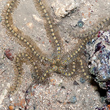
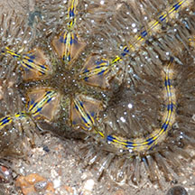
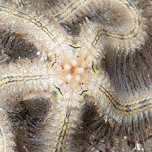
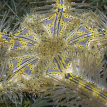
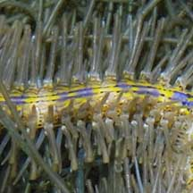
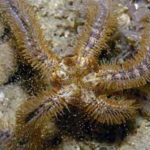
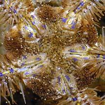

|
|
| brittle stars text index | photo index |
| Phylum Echinodermata > Class Stellaroida > Subclass Ophiuroidea |
| Blue-lined
brittle star Macrophiothrix lineocaerulea Family Ophiotrichidae updated Apr 2020 Where seen? This elegantly marked long-armed brittle star is sometimes seen in rubbly areas near seagrasses on our Northern shores, especially at night. It was previously known as Ophiothrix lineocaerulea. Features: Disk diameter about 1cm, arms 10-20cm long. Central disk thick and somewhat pentagonal. Long blunt cylindrical spines along the length of the arms, held in a bristley manner so the arm resembles a bottle brush. A pair of dark parallel lines along the upperside of the arms. This pair of lines continues on the central disk. The arms have diffuse banding of blue and yellow. |
 Beting Bronok, Jun 10 |
 |
 Underside. |
| Sometimes confused with the Very
long armed brittle star (Macrophiothrix longipeda) which
also has very long arms but lacks the blue lines and has flatter spines. Status and threats: The Blue-lined brittle star is listed among the threatened animals of Singapore. Like other creatures of the intertidal zone, they are affected by human activities such as reclamation and pollution. Trampling by careless visitors also have an impact on local populations. |
 Pulau Sekudu, Aug 04 |
 |
 |
|
 Pulau Sekudu, Jul 04 |
 Releasing eggs? |
| Blue-lined brittle stars on Singapore shores |
On wildsingapore
flickr
|
| Other sightings on Singapore shores |
|
Links
References
|